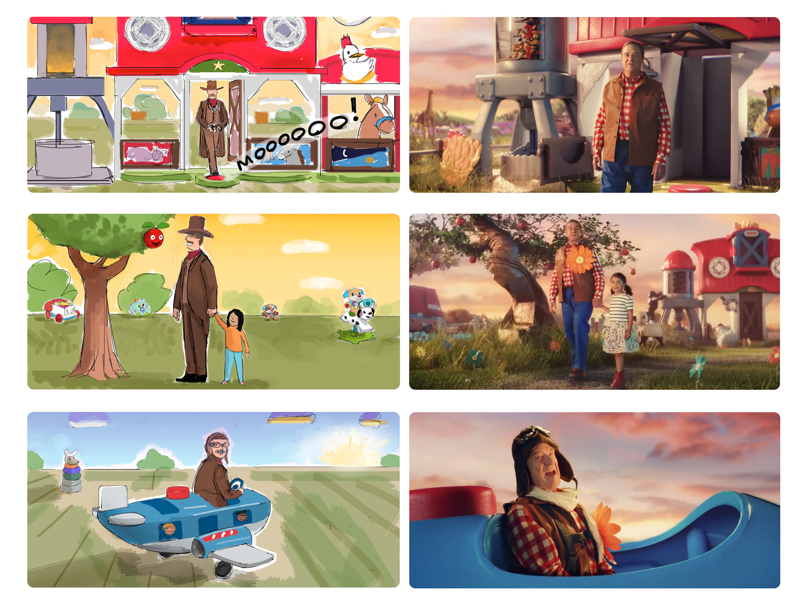

New York / Available worldwide
Human storyboards.
Expressive advertising storyboards for agencies, directors, pitches and production—drawn by a human being who understands where the camera goes and why the joke works.










Selected assignments
Proof of work.
01 / Portfolio


Browse the department
Filed by assignment.
02 / Departments
Production evidence
The board is not decoration.
It is a working document: performance, staging, lens logic, timing, clarity—and just enough life that everybody can see the commercial before the commercial exists.
01 / Readable actionFast
02 / Camera intentionClear
03 / Human performanceAlive
04 / Revision survivalBattle-tested

Filed under: human behavior
Funny art director drawings.
03 / Field notes


Selected history
Serious clients.
Very human drawings.
Wieden + Kennedy, TBWA\Chiat\Day, BBDO, McCann, FCB, Saatchi, Droga5, Grey and DDB—for brands including YouTube, McDonald’s, Samsung, Fisher-Price, Chobani, Yoplait, KFC, General Mills, Kraft, Hyundai, Skittles and ESPN.
Current status: taking assignments
Have boards.
Will travel.
Pitch coming in hot? Production board growing tentacles? Tell me what you’re making, when you need it, and how finished the drawings need to be.